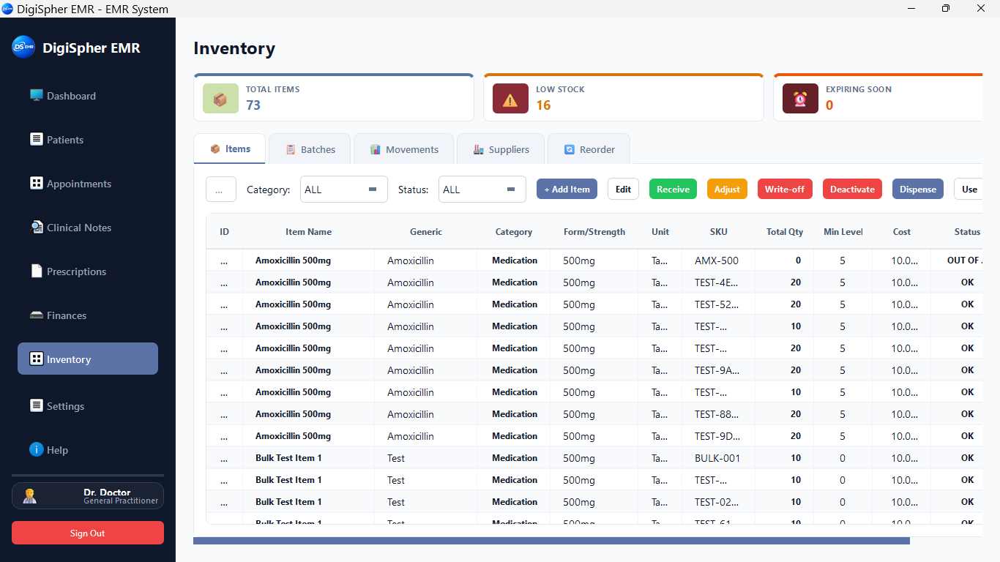
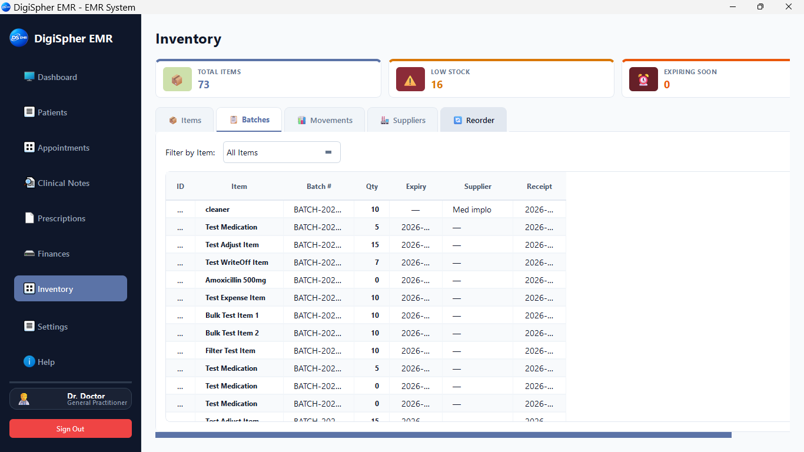
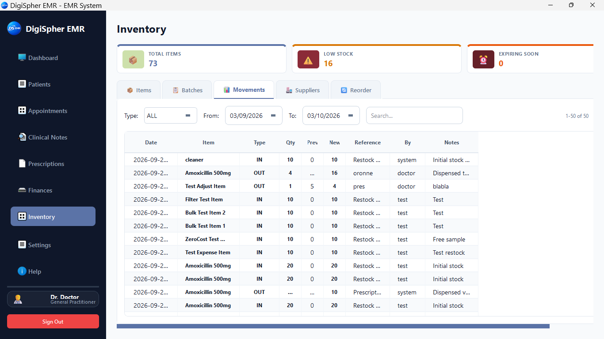

Gérez votre cabinet rapidement et facilement, sans complexité.
DigiSpherEMR réunit le dossier médical et la gestion du cabinet dans une seule application simple et rapide. Gérez vos patients, consultations, ordonnances, rendez-vous, factures, dépenses, recettes et bénéfices sans multiplier les outils. La licence deux postes ajoute la gestion des stocks. Moins de complexité. Moins d'administration. Plus de temps pour les patients.
Du patient au bénéfice : un seul parcours.
Patient → Consultation → Ordonnance → Facture → Dépenses → Bénéfice
Patient
Trouvez le dossier et consultez les antécédents.
Consultation
Consignez les notes, les constantes, les allergies et les autres informations.
Ordonnance
Créez rapidement une ordonnance professionnelle.
Facture
Reliez la facturation à la consultation.
Bénéfice
Visualisez clairement les recettes, les dépenses et le bénéfice.
Découvrez le parcours complet avant d'acheter
Suivez le déroulement habituel du cabinet, du dossier patient et de la consultation à l'ordonnance, aux rendez-vous, à la facturation et aux finances.
Tout ce dont votre cabinet a besoin, sans complexité.
Vous avez déjà beaucoup à gérer. DigiSpherEMR réunit les tâches cliniques et administratives dans un parcours clair, sans multiplier les applications, les tableurs et les systèmes isolés.
Tous les patients au même endroit
Trouvez le patient, ouvrez son dossier, consultez ses antécédents et poursuivez la visite sans navigation inutile.
Des consultations liées au dossier
Consignez les notes, les constantes, les allergies, les antécédents médicaux et les détails de la consultation dans le même espace que le dossier patient.
Des ordonnances sans complications
Ajoutez les médicaments et les posologies, puis générez une ordonnance professionnelle sans parcourir de menus complexes.
Une facturation liée à la visite
Créez la facture et associez le suivi financier aux soins dispensés, sans gérer la facturation ailleurs.
Des dépenses visibles
Enregistrez les dépenses du cabinet et sachez où va votre argent sans tenir un tableur distinct pour chaque coût.
Un bénéfice lisible
Suivez les recettes, les dépenses et le bénéfice avec des rapports simples qui vous aident à comprendre la santé financière de votre cabinet.
Tout le nécessaire pour vos activités quotidiennes
Le produit est conçu autour des tâches quotidiennes des praticiens indépendants, en réunissant le parcours clinique et administratif dans une seule application.

Votre cabinet en un coup d'œil
Commencez la journée avec une vue pratique des informations essentielles.
- Indicateurs du cabinet : Patients actifs, notes du jour, recettes encaissées, rendez-vous et planning hebdomadaire.
- Activité clinique : Consultations récentes, ordonnances et accès rapide aux dossiers.
- Situation financière : État de la facturation en un coup d'œil : factures réglées, brouillons et impayés.
- Mode confidentialité : Masquez rapidement les noms de famille des patients lorsque cela est nécessaire.

Vos tâches fréquentes à portée de clic
Le panneau de commandes garde les actions cliniques et administratives courantes à portée de main.
- Nouveau patient : Créez rapidement un dossier et saisissez les informations du patient.
- Planifier une visite : Programmez un rendez-vous avec son motif et son statut.
- Note clinique : Ouvrez rapidement une consultation structurée selon la méthode SOAP.
- Rédiger une ordonnance : Créez des ordonnances comprenant plusieurs médicaments avec accès aux informations sur les allergies.
- Émettre une facture : Créez des factures patient détaillées.
- Finances du cabinet : Accédez aux rapports financiers.

Toute l'histoire du patient au même endroit
Retrouvez les informations nécessaires à une consultation dans une vue unique du patient.
- Profil du patient : Identité, coordonnées et personne à contacter en cas d'urgence.
- Informations sur les allergies : Alertes d'allergie bien visibles, avec niveaux de gravité.
- Historique des constantes : Tension artérielle, fréquence cardiaque, température, poids, taille, SpO2, fréquence respiratoire et IMC.
- Vue longitudinale : Consultations, ordonnances, rendez-vous et factures associés au patient.

Des notes SOAP structurées, sans complexité superflue
Documentez les consultations selon une structure clinique familière et retrouvez facilement les notes précédentes.
- Méthode SOAP : Champs Subjectif, Objectif, Évaluation et Plan.
- Modèles cliniques : Consultations générales, examens annuels, suivis et évaluations courantes.
- Brouillons et notes finalisées : Rédigez un brouillon, puis finalisez les notes avec horodatage.
- Recherche : Retrouvez rapidement les dossiers patients et les notes cliniques précédentes.
Clinique DigiSpher
Informations sur le médecin et la clinique| Médicament | Posologie | Fréquence | Durée |
|---|---|---|---|
| Médicament | Posologie | Fréquence | Durée |
| Médicament | Posologie | Fréquence | Durée |
Créez des ordonnances A5 professionnelles en quelques secondes
Rédigez les ordonnances dans le parcours clinique et générez des documents A5 clairs, prêts à imprimer.
- Plusieurs médicaments : Ajoutez le médicament, la posologie, la voie d'administration, la fréquence et la durée.
- Informations sur les allergies : Consultez les allergies connues du patient pendant la prescription.
- Identité visuelle de la clinique : Configurez les informations de la clinique et du médecin pour les documents générés.
- PDF et impression : Générez des ordonnances PDF A5 et imprimez-les depuis Windows.

Gardez vos rendez-vous organisés
Gérez les visites programmées dans la même application que vos dossiers patients.
- Détails de la visite : Patient, date, heure, médecin et motif.
- Suivi du statut : Programmé, confirmé, en cours, terminé, annulé ou patient absent.
- Vues chronologiques : Consultez les rendez-vous du jour, le planning hebdomadaire ou l'activité mensuelle.
Comprenez les finances de votre cabinet
Gérez la facturation des patients, les dépenses, les recettes et les rapports du cabinet dans le même parcours que les soins.
- Factures des patients : Créez des factures détaillées et des reçus.
- Prise en charge multidevise : Gérez la facturation dans plusieurs devises.
- Gestion des assurances : Conservez les informations d'assurance dans le parcours de facturation.
- Suivi des dépenses : Enregistrez les frais du cabinet : loyer, fournitures, services, équipements, personnel et logiciels.
- Rapports financiers : Consultez les recettes, les dépenses, les montants en attente et le bénéfice.
- Export CSV : Exportez des données financières organisées pour vos tableurs et votre comptable.
Sachez ce qui est disponible, ce qui manque et ce qui a été utilisé
Avec la licence deux postes, suivez les fournitures médicales et les médicaments, de la réception des lots à chaque mouvement de stock.

Repérez les ruptures avant qu'elles ne gênent les soins
Consultez le nombre d'articles, les stocks faibles et les produits proches de leur date de péremption dans un seul espace.
- Vue claire des stocks : Consultez les quantités, les catégories, les seuils minimums et les statuts.
- Actions quotidiennes : Réceptionnez, ajustez, retirez, délivrez et utilisez les articles depuis leur fiche.
- Réapprovisionnement : Repérez les articles à surveiller sans tableur séparé.

Gardez les détails de chaque lot à portée de main
Suivez les lots de chaque article pour consulter ensemble les quantités, les dates de péremption, les fournisseurs et les dates de réception.
- Fiches de lot : Consultez la quantité et la date de péremption de chaque lot.
- Informations fournisseur : Conservez le fournisseur et la date de réception avec le stock.
- Filtrage rapide : Limitez la liste aux lots de l'article recherché.

Retrouvez l'origine de chaque changement de stock
Consultez les entrées et les sorties avec les anciennes et nouvelles quantités, les références, les utilisateurs et les notes.
- Changements traçables : Suivez les réceptions, les délivrances et les ajustements dans un seul historique.
- Filtres utiles : Recherchez les mouvements par type, date ou article.
- Meilleur passage de relais : Partagez une vue des mouvements récents avec votre équipe.
Un logiciel pratique pour les cabinets privés
DigiSpherEMR s'adresse aux médecins qui souhaitent un système utile sans la complexité des logiciels hospitaliers.
Médecins indépendants
Un parcours quotidien completGérez les patients, les visites, les ordonnances, les rendez-vous, la facturation et les finances dans une seule application.
Cabinets privés
Clinique et finances réuniesGardez les dossiers médicaux et les finances du cabinet au même endroit.
Petites cliniques
Une administration simplifiéeOrganisez clairement les patients, les consultations, les rendez-vous, la facturation, les dépenses et les rapports.
Passage du papier au numérique
Une transition numérique facileCommencez à gérer votre cabinet sur ordinateur sans adopter un système d'entreprise écrasant.
Plus de fonctionnalités ne signifie pas toujours mieux. DigiSpherEMR facilite l'essentiel.
Un paiement. Votre système de gestion de cabinet.
Choisissez un poste si vous exercez seul, ou deux postes avec gestion des stocks si vous travaillez avec un secrétariat. Les deux licences à vie se paient une seule fois.
Licence pour un poste
Les fonctions cliniques et de gestion essentielles pour un médecin qui travaille sur un ordinateur.
Un poste sous licence. Aucun abonnement logiciel mensuel.
- Gestion des patients
- Consultations
- Dossiers médicaux
- Ordonnances et impression A5
- Rendez-vous
- Factures et suivi des recettes
- Prise en charge multidevise
- Gestion des assurances
- Suivi des dépenses et du bénéfice
- Génération de PDF et sauvegardes
Le module de gestion des stocks n'est pas inclus dans la licence un poste.
Licence pour deux postes
Un ordinateur sous licence pour le médecin et un pour le secrétariat, avec la gestion des stocks incluse.
Deux postes sous licence. Un même parcours de travail.
- Gestion des patients
- Consultations
- Dossiers médicaux
- Ordonnances et impression A5
- Rendez-vous
- Factures et suivi des recettes
- Prise en charge multidevise
- Gestion des assurances
- Suivi des dépenses et du bénéfice
- Génération de PDF et sauvegardes
- Stocks, lots et mouvements
Besoin de plus de deux postes ou d'une adaptation ? Demandez un devis personnalisé.
Demander un devis personnalisé
Vous avez besoin d'adaptations pour votre cabinet, d'intégrations personnalisées ou de licences pour plusieurs postes ? Indiquez vos besoins ci-dessous pour recevoir un devis adapté.
Demande de devis envoyée !
Merci, Docteur. Nous avons reçu votre demande de devis personnalisé et vous répondrons prochainement.
Assez simple pour une prise en main rapide
Vous ne devriez pas avoir à devenir spécialiste informatique pour gérer votre cabinet. DigiSpherEMR facilite l'accès aux actions essentielles et garde chaque écran centré sur sa tâche.
Trouver un patient
Recherchez son nom et ouvrez son dossier.
Commencer la visite
Consultez ses antécédents et commencez rapidement la consultation.
Rédiger une ordonnance
Ajoutez les médicaments et générez l'ordonnance.
Créer une facture
Enregistrez l'aspect financier de la visite avant de passer à la suite.
Patient suivant
Un parcours simple, rapide et reproductible au quotidien.
Travaillez en local sur un PC Windows récent
DigiSpherEMR est une application Windows autonome conçue pour les médecins qui souhaitent un parcours local pratique sans abonnement cloud obligatoire.
Des réponses claires avant de commencer
Des réponses pratiques sur les fonctions de DigiSpherEMR, son utilisation hors ligne et les professionnels auxquels il s'adresse.